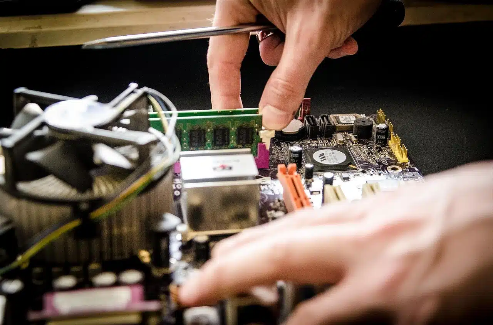
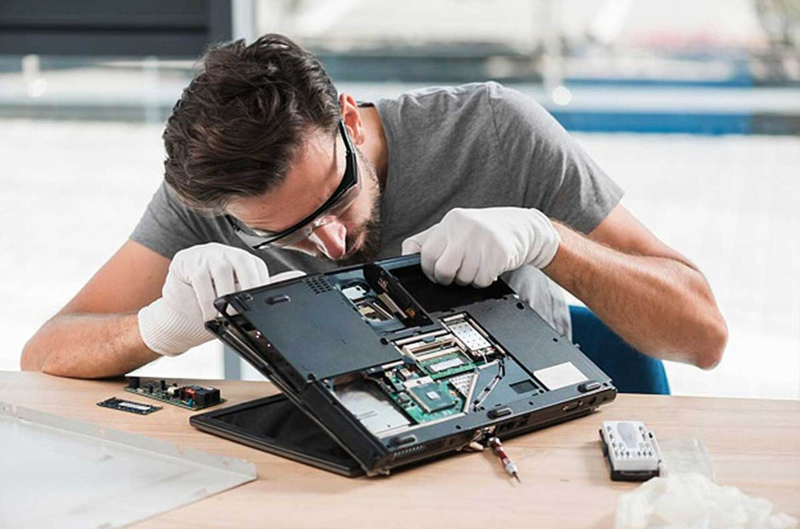
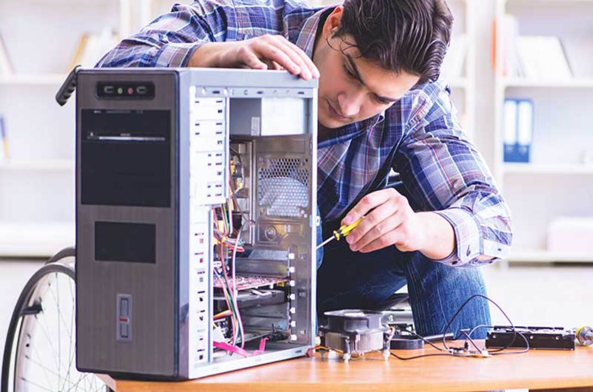
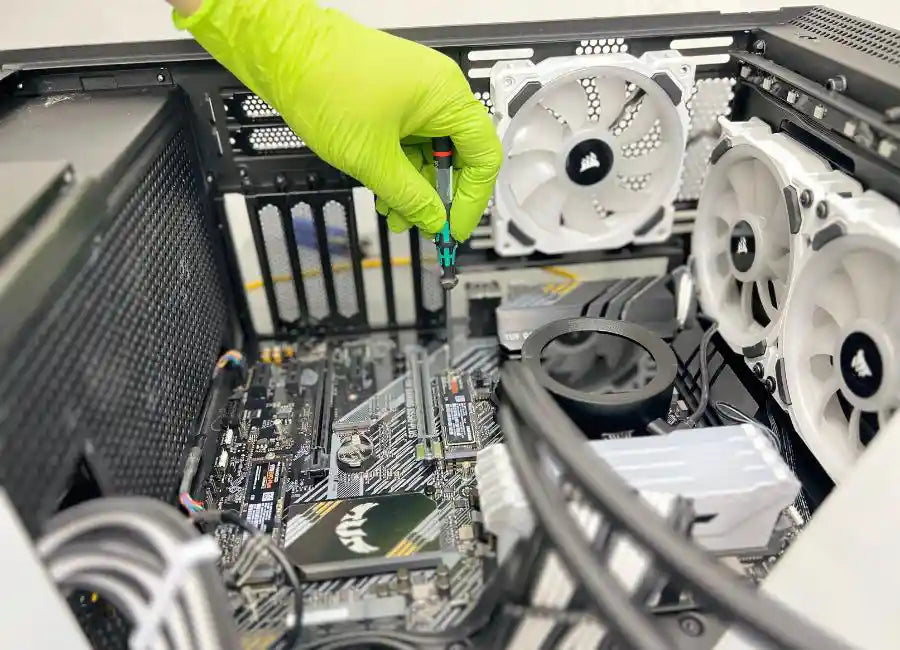
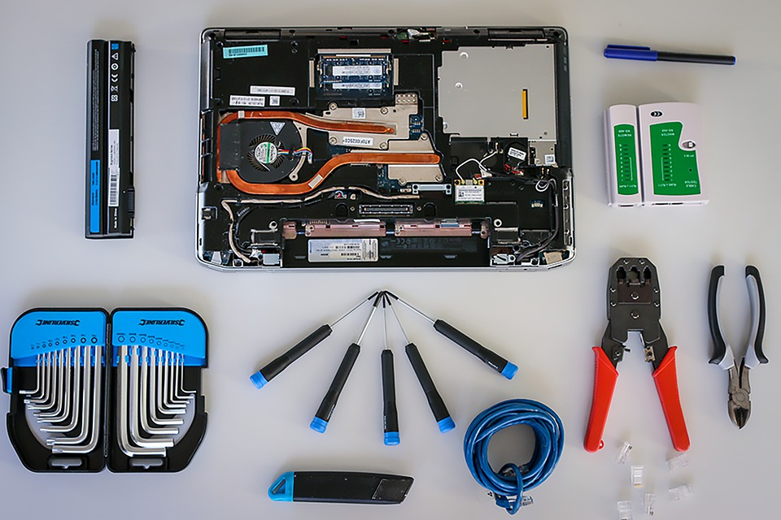

Soluciones rápidas y confiables para tus dispositivos
📞 Teléfono: 962-164-6348
📧 Email: Venturalalo92@gmail.com
📍 Ubicación: Tapachula, Chiapas
¿Tienes problemas con tu equipo? Nuestro equipo está listo para ayudarte.
Haz clic en el botón de contacto o visita nuestro centro de atención.